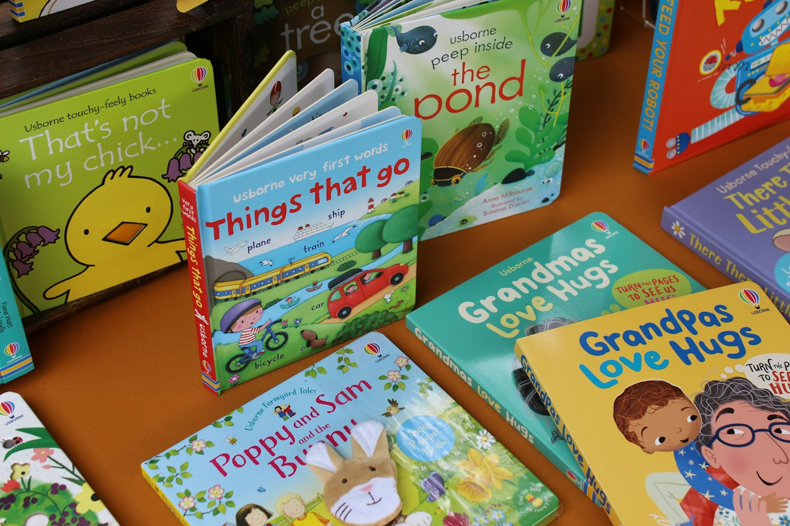
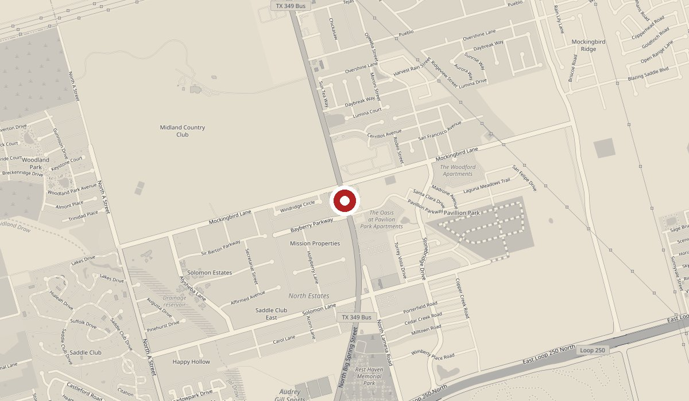

Who rides in the wagon
Every story starts with its characters. Little Red Wagon is licensed by Texas HHSC to care for children from infancy all the way to school age, so siblings can share the same wagon.
🍼
Infants
🧸
Toddlers
📚
Pre-K
🎒
School age
What's packed for the day
The details below come straight from the center's state license record.
- Meals and snacks provided
- Drop-in care for days when plans change
- Part-time care
- Child care scholarships (subsidies) accepted

Stock photos via Unsplash, not the center's own.
When & where to find us
Monday – Friday
7:30 in the morning until 5:30 in the evening
Closed on weekends.
2000 N Big Spring St
Midland, TX 79705

Map data © OpenStreetMap contributors · tap for directions
✦
To be continued…
The next chapter starts with a phone call.
(432) 570-7066